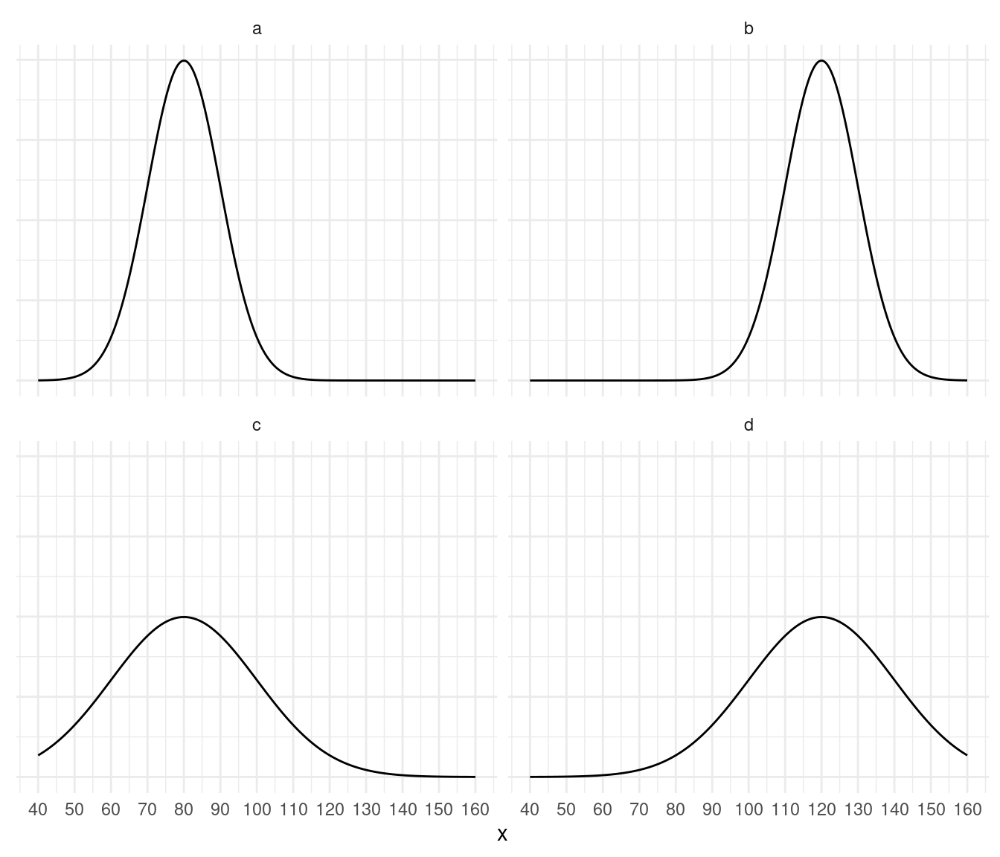

You can also download a PDF copy of this homework assignment.
Solutions for some problems are given at the end. For problems that ask you to “confirm” something, the answer is given within the problem.
The figure below shows four normal/bell-shaped distributions.  Each distribution has a mean of either 80 or 120, and a standard deviation of either 10 or 20. Label each distribution by its mean and standard deviation. The solution is given at the end.
The figure below shows two distributions: the distribution of the heights of Hobbits living in the North Farthing, and the distribution of the heights of Hobbits living in the South Farthing. Both distributions are normal/bell-shaped. The distribution of heights for Hobbits living in the North Farthing has a mean of 100 and a standard deviation of 5, and the distribution of Hobbits living in the South Farthing has a mean of 85 and a standard deviation of 10. Box plots representing each distribution are also shown. Note that the five-number summary for each distribution is shown below the corresponding box plot. Use the information above to answer the following questions.
Confirm that of the Hobbits from the North Farthing, about 68% are between 95 cm and 105 cm, and about 95% are between 90 cm and 110 cm. Also confirm that of the Hobbits from the South Farthing, about 68% are between 75 cm and 95 cm, and about 95% are between 65 cm and 105 cm.
Two Hobbits, Marigold and Pimpernel, are both 105 cm tall. But Marigold is from the North Farthing, and Pimpernel is from the South Farthing. But suppose we want to know how they compare relative to the distribution of Hobbit heights in their home Farthing. Confirm that Merigold has a \(z\)-score of 1 and that Pimpernel has a \(z\)-score of 2, so Pimpernel is taller relative to the Hobbits in her home Farthing.
Using the box plots, confirm that of the Hobbits from the South Farthing, about 25% are less than 78 cm, and about 50% are between 78 cm and 92 cm.
Consider the following distribution of a variable \(x\). The first quartile is 7 and the third quartile is 16.5. Which observations are outliers using the criteria based on the five number summary.
Consider the following bell/normal-shaped distribution of a variable \(x\). The distribution has a mean of 100 and a standard deviation of 10. Which observations are outliers using the criteria based on the empirical rule?
Recall the distributions of the heights of Hobbits from the North and South Farthings shown in the Normal Distributions and the Empirical Rule problems earlier. Based on the empirical rule criteria, how short or tall would a Hobbit need to be to be considered an outlier in each Farthing?
Distributions a and c have means of 80, while distributions b and d have means of 120. Distributions a and b have standard deviations of 10, while distributions c and d have standard deviations of 20.
The plot below shows the observations that are outliers.
The plot below shows the observations that are outliers.
The plot below shows the observations that are outliers.
In the North Farthing heights less than 90 cm or greater than 110 cm would be outliers, while in the South Farthing heights less than 65 cm or greater than 105 cm would be outliers.